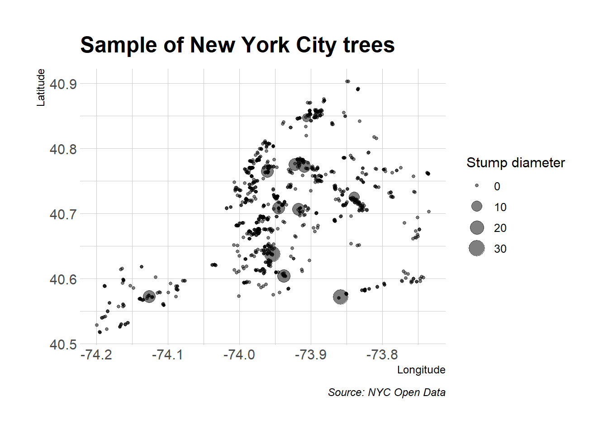
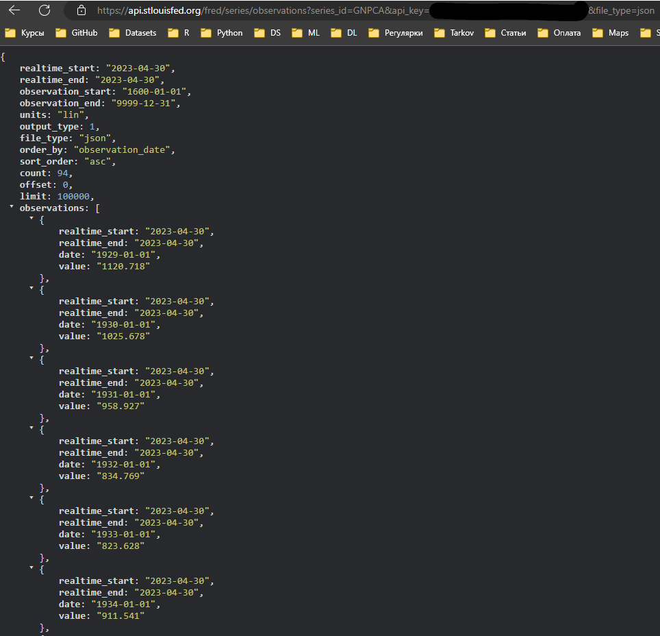
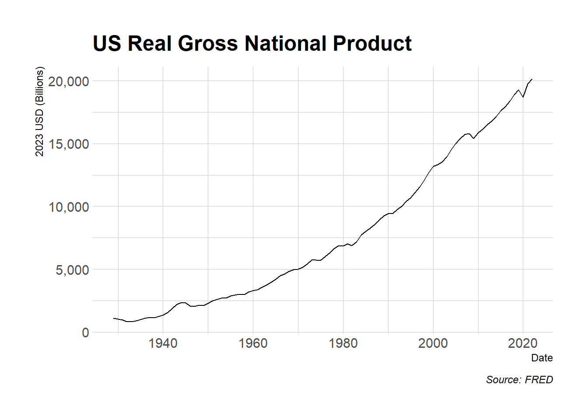
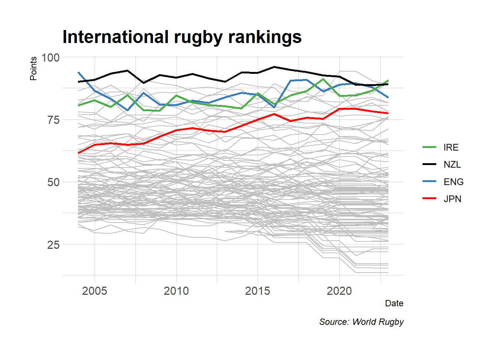

## Завантажте та встановіть пакети, які ми будемо використовувати сьогодні
if (!require("pacman")) install.packages("pacman")
pacman::p_load(tidyverse, httr, lubridate, hrbrthemes, janitor, jsonlite, fredr,
listviewer, usethis)
## Моя улюблена тема ggplot2 (необов’язково)
theme_set(hrbrthemes::theme_ipsum())
readRenviron("~/.Renviron")Webscraping: API
Реєстрація та програмне забезпечення
Зареєструватися
Ми будемо завантажувати економічні дані з FRED API. Для цього потрібно спочатку створити обліковий запис користувача, а потім зареєструвати особистий ключ API.
Зовнішнє програмне забезпечення
Сьогодні я буду використовувати JSONView, розширення для браузера, яке відтворює вивід JSON.
Пакети R
- Нові:
jsonlite,httr,listviewer,usethis,fredr - Вже відомі:
tidyverse,lubridate,hrbrthemes,janitor
Ось зручний спосіб інсталювати (за потреби) і завантажити всі перераховані вище пакети.
Резюме минулого разу
Під час минулої лекції ми побачили, що веб-сайти та веб-додатки поділяються на дві категорії: 1) серверні та 2) клієнтські. Потім ми практикували збирати дані, які належать до першої категорії — тобто відтворені на стороні сервера — за допомогою пакета rvest. Ця техніка зосереджена на селекторах CSS (за допомогою SelectorGadget) і тегах HTML. Велика кількість параметрів CSS і гнучкість самого HTML означає, що кроки, які ідеально працюють на одному веб-сайті, можуть легко зазнати невдачі на іншому веб-сайті.
Сьогодні ми зосередимося на другій категорії: аналіз веб-даних, які відображаються на стороні клієнта. Хороша новина полягає в тому, що цей підхід, якщо він доступний, зазвичай значно полегшує отримання даних з Інтернету. Недоліком є те, що, знову ж таки, це може включати стільки ж мистецтва, скільки науки.
На стороні клієнта, API та кінцеві точки API
Пам’ятайте, що веб-сайти або програми, створені за допомогою фреймворку на стороні клієнта, зазвичай передбачають такі кроки:
- Ви відвідуєте URL-адресу, яка містить шаблон статичного вмісту (таблиці HTML, CSS тощо). Цей шаблон сам по собі не містить жодних даних.
- Однак у процесі відкриття URL-адреси ваш браузер надсилає запит на сервер хосту.
- Якщо ваш запит дійсний, сервер видає відповідь, і ви отримуєте необхідні дані, які динамічно відображає сторінка у вашому браузері. – Сторінка, яку ви фактично бачите у своєму браузері, є сумішшю статичного вмісту та динамічної інформації, яку відображає ваш браузер (тобто «клієнт»).
Усі ці запити, відповіді та візуалізація відбуваються через API головної програми (або Application Program Interface).
API
Якщо ви новачок у API або читаєте це після факту, я рекомендую цей чудовий ресурс від Zapier: An Introduction to APIs. Це досить глибока публікація, але вам не потрібно вивчати все, щоб зрозуміти суть. Коротка версія полягає в тому, що API – це просто набір правил і методів, які дозволяють різним програмам програмного забезпечення взаємодіяти та обмінюватися інформацією. Це стосується не лише веб-серверів і браузерів, а й пакетів програмного забезпечення, таких як бібліотеки R, які ми використовуємо1. Основні поняття включають:
- Сервер: потужний комп’ютер, на якому працює API.
- Клієнт: програма, яка обмінюється даними з сервером через API.
- Протокол: «етикет», який лежить в основі того, як комп’ютери спілкуються один з одним (наприклад, HTTP).
- Методи: «дієслова», які клієнти використовують для спілкування з сервером. Основний метод, який ми будемо використовувати, — це
GET(тобто запит серверу отримати інформацію), але інші поширені методи — цеPOST,PUTіDELETE. - Запити: Те, що клієнт запитує у сервера (див. Методи вище).
- Відповідь: відповідь сервера. Включає Status Code (наприклад, «404», якщо не знайдено, або «200», якщо вдалося), Header (тобто метаінформація про відповідь) і Body (тобто фактичний вміст, який нас цікавить).
- тощо
Ще трохи про кінцеві точки API
Ключовим моментом у всьому цьому є те, що у випадку веб-API ми можемо отримати доступ до інформації безпосередньо з бази даних API, якщо зможемо вказати правильну URL-адресу. Ці URL-адреси відомі як кінцеві точки API (анг. API endpoints).
Кінцеві точки API багато в чому схожі на звичайні URL-адреси веб-сайтів, які ми всі звикли відвідувати. Для початку ви можете перейти до них у своєму веб-браузері. Однак у той час як звичайні веб-сайти відображають інформацію у насиченому вмісті HTML — зображення, відео з котами, гарне форматування тощо — кінцева точка API набагато менш приваблива візуально. Перейдіть у веб-переглядачі до кінцевої точки API, і ви побачите купу, здавалося б, неформатованого тексту. По правді кажучи, ви бачите (ймовірно) або JSON (нотація об’єктів JavaScript), або XML (розширювана мова розмітки).
Вам не потрібно надто турбуватися про синтаксис JSON і XML. Важливо те, що об’єкт у вашому браузері — цей набір, здавалося б, неформатованого тексту — насправді дуже точно структурований і відформатований. Крім того, він містить цінну інформацію, яку ми можемо легко прочитати в R (або Python, Julia тощо). Нам просто потрібно знати правильну кінцеву точку API для даних, які нам потрібні.
Давайте попрактикуємося робити це на кількох прикладах програм. Я почну з найпростішого випадку (ключ API не потрібен, явна кінцева точка API), а потім розгляну кілька складніших прикладів.
Застосування 1: Дерева Нью-Йорка
NYC Open Data це досить дивовижна ініціатива. Його місія полягає в тому, щоб «зробити велику кількість загальнодоступних даних, створених різними агентствами міста Нью-Йорка та іншими організаціями міста, доступними для загального користування». Ви можете отримати дані про все: від даних про арешт, до розташування точок доступу Wi-Fi, від оголошень про роботу в місті до підрахунку кількості бездомних, від ліцензій на собак, до каталогу туалетів у громадських парках… Список можна продовжувати. Я наполегливо заохочую вас дослідити ці дані у вільний час, але ми збираємося зробити щось «земне» для цієї першої програми: завантажте зразок даних про дерева з 2015 NYC Street Tree Census.
Я хотів почати з прикладу з відкритих даних Нью-Йорка, тому що вам не потрібно налаштовувати ключ API заздалегідь2.(https://data.cityofnewyork.us/profile/app_tokens) для отримання токена програми NYC Open Data. Все, що вам потрібно зробити, це виконати наступні кроки:
- Відкрийте веб-сторінку у своєму браузері (якщо ви ще цього не зробили).
- Ви маєте побачити вкладку API. Натисніть на неї.
- Скопіюйте кінцеву точку API, яка з’явиться у спливаючому вікні.
- Необов’язково: Вставте цю кінцеву точку в нову вкладку у своєму браузері. Ви побачите купу тексту JSON, який можна гарно відобразити за допомогою розширення браузера JSONView, яке ми встановили раніше.
Тепер, коли ми знайшли кінцеву точку API, давайте прочитаємо дані в R. Ми зробимо це за допомогою функції fromJSON() з чудового пакету jsonlite (link). Це автоматично перетворить масив JSON на звичайний дата фрейм R. Однак я піду ще трохи далі і перетворю його на тібл, оскільки з ним приємніше працювати.
library(jsonlite)
nyc_trees =
fromJSON("https://data.cityofnewyork.us/resource/uvpi-gqnh.json") %>%
as_tibble()
nyc_trees# A tibble: 1,000 × 45
tree_id block_id created_at tree_dbh stump_diam curb_loc status health
<chr> <chr> <chr> <chr> <chr> <chr> <chr> <chr>
1 180683 348711 2015-08-27T00:00… 3 0 OnCurb Alive Fair
2 200540 315986 2015-09-03T00:00… 21 0 OnCurb Alive Fair
3 204026 218365 2015-09-05T00:00… 3 0 OnCurb Alive Good
4 204337 217969 2015-09-05T00:00… 10 0 OnCurb Alive Good
5 189565 223043 2015-08-30T00:00… 21 0 OnCurb Alive Good
6 190422 106099 2015-08-30T00:00… 11 0 OnCurb Alive Good
7 190426 106099 2015-08-30T00:00… 11 0 OnCurb Alive Good
8 208649 103940 2015-09-07T00:00… 9 0 OnCurb Alive Good
9 209610 407443 2015-09-08T00:00… 6 0 OnCurb Alive Good
10 192755 207508 2015-08-31T00:00… 21 0 OffsetF… Alive Fair
# ℹ 990 more rows
# ℹ 37 more variables: spc_latin <chr>, spc_common <chr>, steward <chr>,
# guards <chr>, sidewalk <chr>, user_type <chr>, problems <chr>,
# root_stone <chr>, root_grate <chr>, root_other <chr>, trunk_wire <chr>,
# trnk_light <chr>, trnk_other <chr>, brch_light <chr>, brch_shoe <chr>,
# brch_other <chr>, address <chr>, zipcode <chr>, zip_city <chr>,
# cb_num <chr>, borocode <chr>, boroname <chr>, cncldist <chr>, …Певні обмеження: Зверніть увагу, що повний набір даних перепису містить майже 700 000 окремих дерев. Однак ми завантажили лише крихітний зразок, оскільки API за замовчуванням має обмеження в 1000 рядків. Мені не хочеться отримати доступ до повного набору даних тут, оскільки я просто хочу проілюструвати деякі основні поняття. Тим не менш, якби ви прочитали документацію, ви б побачили, що ви можете змінити це значення за умовчанням, додавши ?$limit= LIMIT до кінцевої точки API. Наприклад, щоб прочитати лише перші п’ять рядків, ви можете використати:
## Not run
fromJSON("https://data.cityofnewyork.us/resource/uvpi-gqnh.json?$limit=5")Повертаючись до правильного шляху, давайте побудуємо дані нашого дерева. Одна незначна річ, на яку я хочу звернути увагу, це те, що jsonlite::fromJSON() автоматично перетворює все в текст, тому нам також потрібно буде перетворити деякі стовпці на числові перед початком візуалізації.
nyc_trees %>%
select(longitude, latitude, stump_diam, spc_common, spc_latin, tree_id) %>%
mutate_at(vars(longitude:stump_diam), as.numeric) %>%
ggplot(aes(x=longitude, y=latitude, size=stump_diam)) +
geom_point(alpha=0.5) +
scale_size_continuous(name = "Stump diameter") +
labs(
x = "Longitude", y = "Latitude",
title = "Sample of New York City trees",
caption = "Source: NYC Open Data"
)
Не погано. Це, напевно, було б веселішим/вражаючим із справжньою картою Нью-Йорка за ним. Однак ми збережемо це для наступної лекції…
Ще раз хочу нагадати вам, що наша перша спроба не вимагала попередньої реєстрації на веб-сайті Open Data NYC або створення ключа API. Це нетипово. Більшість інтерфейсів API дозволять отримати доступ до даних і завантажити їх лише після того, як ви зареєструєте в них ключ API. Це особливо вірно, якщо ви хочете отримати доступ до API, пов’язаного з державним агентством чи установою. Отже, давайте попрацюємо з програмою, де потрібен ключ API…
Застосування 2: FRED data
Наша друга програма включатиме завантаження даних із FRED API. Вам потрібно буде зареєструвати ключ API, якщо ви хочете виконати мої кроки, тож зробіть це, перш ніж продовжувати.
FRED — це база даних, яку підтримує Федеральний резервний банк Сент-Луїса, який дає змогу будувати круті інтерактивні діаграми як цю ВНП США з 1929 року.
Для цього другого прикладу програми я покажу вам, як завантажити дані, що лежать в основі діаграми вище, за допомогою FRED API. Насправді я піду глибше. Спочатку я покажу вам, як завантажити його самостійно, щоб ви могли зрозуміти, що відбувається під капотом. Потім я скерую вас до пакета, який виконує всю роботу API за вас.
Своїми руками
Як і з усіма API, хорошим місцем для початку є документація FRED API для розробників. Якщо ви прочитаєте її, то побачите, що шлях кінцевої точки, який нас цікавить, це series/observations. Ця кінцева точка «отримує спостереження або значення даних для ряду економічних даних». Документація кінцевої точки містить більш глибоке обговорення, включаючи різноманітні параметри, які вона приймає3. Однак параметри, на яких ми зосередимося тут, це просто:
- file_type: “json” (Необов’язково, але наш бажаний тип виведення.)
- series_id: “GNPCA” (обов’язково. Потрібний ряд даних.)
- api_key: “YOUR_API_KEY” (Обов’язково. Перейдіть і заберіть/скопіюйте свій ключ зараз.)
Давайте об’єднаємо ці параметри зі шляхом кінцевої точки, щоб переглядати дані безпосередньо в нашому браузері. Перейдіть до https://api.stlouisfed.org/fred/series/observations?series_id=GNPCA&api_key=YOUR_API_KEY&file_type=json, замінивши “YOUR_API_KEY” на ваш справжній ключ. Ви повинні побачити щось на зразок наступного:

У цей момент у вас, ймовірно, виникає спокуса прочитати об’єкт JSON безпосередньо у вашому середовищі R за допомогою функції jsonlite::readJSON(). І це спрацює. Однак це не те, до чого ми тут підемо. Натомість ми переглянемо пакет httr (посилання). чому? Ну, в основному тому, що httr поставляється з різноманітними функціями, які дозволяють нам більш гнучко та безпечно взаємодіяти з веб-API.
Давайте почнемо з визначення деяких зручних змінних, таких як шлях кінцевої точки та параметри (які ми будемо зберігати в списку).
endpoint = "series/observations"
params = list(
api_key= "YOUR_FRED_KEY", ## Змініть на власний ключ
file_type="json",
series_id="GNPCA"
)Далі ми використаємо функцію httr::GET() для запиту (тобто завантаження) даних. Я призначаю це об’єкту під назвою fred.
library(httr)
fred =
httr::GET(
url = "https://api.stlouisfed.org/", ## Базовий URL
path = paste0("fred/", endpoint), ## Кінцева точка API
query = params ## Наш список параметрів
)Витратьте секунду, щоб надрукувати об’єкт fred у вашій консолі. Те, що ви побачите, дуже круте; тобто це фактична відповідь API, включаючи Status Code та Content. Щось на зразок:
## Response [https://api.stlouisfed.org/fred/series/observations?api_key=YOUR_FRED_KEY&file_type=json&series_id=GNPCA]
## Date: 2023-04-30 20:54
## Status: 400
## Content-Type: application/json; charset=UTF-8
## Size: 219 BЩоб фактично отримати вміст (тобто дані) з цієї відповіді, я скористаюся функцією httr::content(). Крім того, оскільки ми знаємо, що цей вміст є масивом JSON, ми можемо знову перетворити його на об’єкт R за допомогою jsonlite::fromJSON().
fred =
fred %>%
httr::content("text") %>% ## Витягніть вміст відповіді (тобто текст)
jsonlite::fromJSON() ## Перетворення з JSON на об’єкт R
## Який тип об’єкта ми отримали?
typeof(fred)[1] "list"Виявляється, попередній крок дав об’єкт списку в R4. тому тепер нам потрібно перевірити цей список, щоб краще зрозуміти його структуру, перш ніж витягувати інформацію, яка нас цікавить. Я б використав базову функцію View(), щоб зробити це в інтерактивному сеансі R. Але це не спрацює також для цих конспектів лекцій. Натомість я скористаюся функцією listviewer::jsonedit(), щоб створити інтерактивний віджет, який чудово відображається у Quarto.
# View(fred) ## Що я б використав в інтерактивному сеансі R
library(listviewer)
jsonedit(fred, mode = "view") ## Краще для документів Quarto.На щастя, цей конкретний об’єкт списку не надто складний. Ми бачимо, що насправді нас цікавить піделемент fred$observations. Я використаю purrr::pluck(), щоб дістати цей елемент (є багато інших способів зробити це), а потім перетворимо його на тібл.
fred =
fred %>%
purrr::pluck("observations") %>% ## Витягніть елемент списку "$observations".
# .$observations %>% ## Я також міг би скористатися цим
# magrittr::extract("observations") %>% ## Або цим
as_tibble()
fred# A tibble: 94 × 4
realtime_start realtime_end date value
<chr> <chr> <chr> <chr>
1 2023-04-30 2023-04-30 1929-01-01 1120.718
2 2023-04-30 2023-04-30 1930-01-01 1025.678
3 2023-04-30 2023-04-30 1931-01-01 958.927
4 2023-04-30 2023-04-30 1932-01-01 834.769
5 2023-04-30 2023-04-30 1933-01-01 823.628
6 2023-04-30 2023-04-30 1934-01-01 911.541
7 2023-04-30 2023-04-30 1935-01-01 993.105
8 2023-04-30 2023-04-30 1936-01-01 1119.585
9 2023-04-30 2023-04-30 1937-01-01 1178.246
10 2023-04-30 2023-04-30 1938-01-01 1139.642
# ℹ 84 more rowsГаразд! Нарешті ми отримали наші дані та майже готові до побудови. Пам’ятайте, що jsonlite::fromJSON() автоматично перетворює все на текст, тому я швидко зміню деякі змінні на дати (за допомогою lubridate::ymd()) і числа.
library(lubridate)
fred =
fred %>%
mutate(across(realtime_start:date, ymd)) %>%
mutate(value = as.numeric(value)) Давайте візуалізуємо…
fred %>%
ggplot(aes(date, value)) +
geom_line() +
scale_y_continuous(labels = scales::comma) +
labs(
x="Date", y="2023 USD (Billions)",
title="US Real Gross National Product", caption="Source: FRED"
)
Крім того: безпечно зберігайте та використовуйте ключі API як змінні середовища
У наведеному вище прикладі я припустив, що ви просто заміните текст власника “YOUR_FRED_KEY” на ваш фактичний ключ API. Це, очевидно, не дуже безпечно чи масштабовано, оскільки це означає, що ви не можете поділитися своїм сценарієм R, не передавши свій ключ5. На щастя, є простий спосіб щоб безпечно зберігати та використовувати конфіденційну інформацію, наприклад ключі API або паролі: просто збережіть їх як R змінні середовища. Існує два тісно пов’язані підходи:
- Встановіть змінну середовища лише для поточного сеансу R.
- Встановіть змінну середовища, яка зберігається протягом сеансів R.
Давайте коротко розглянемо кожен по черзі.
1) Встановіть змінну середовища лише для поточного сеансу R
Визначити змінну середовища для поточного сеансу R дуже просто. Просто використовуйте базову функцію Sys.setenv(). Наприклад:
## Установіть нову змінну середовища під назвою MY_API_KEY. Лише поточний сеанс.
Sys.setenv(MY_API_KEY="abcdefghijklmnopqrstuvwxyz0123456789") Коли це буде зроблено, ви можете безпечно призначити свій ключ об’єкту — включно з документом Quarto, який ви збираєтеся зібрати та поділитися — за допомогою функції Sys.getenv(). Наприклад:
## Призначте змінну середовища об’єкту R
my_api_key = Sys.getenv("MY_API_KEY")
## роздрукуйте його, щоб показати, що він працює
my_api_key[1] "abcdefghijklmnopqrstuvwxyz0123456789"Важливо: хоча цей підхід дуже простий, зауважте, що на практиці частину Sys.setenv() слід запускати лише безпосередньо у вашій консолі R. Ніколи не включайте фрагменти коду з конфіденційними викликами Sys.setenv() у файл Quarto або інші спільні документи6. Це повністю зруйнувало б мету! Крім роздратування необхідності вручну встановлювати мій ключ API кожного разу, коли я запускаю новий сеанс R, це одна з причин, чому я віддаю перевагу наступному підходу збереження змінних середовища в сесіях…
2) Встановіть змінну середовища, яка зберігається протягом сеансів R
Трюк для встановлення змінної середовища R, доступної для всіх сеансів, полягає в тому, щоб додати її до спеціального файлу під назвою ~/.Renviron. Це текстовий файл, який знаходиться у вашому домашньому каталозі — зверніть увагу на шлях ~/ — який R автоматично зчитує під час запуску. Оскільки ~/.Renviron — це лише текстовий файл, ви можете редагувати його будь-яким текстовим редактором, який вам подобається. Однак вам може знадобитися спочатку створити його, якщо він не існує. Зручним способом зробити все це з RStudio є функція usethis::edit_r_environ(). Вам потрібно буде запустити наступні кілька рядків в інтерактивному режимі:
## Відкрийте файл .Renviron. Тут ми можемо додати ключі API, які зберігаються протягом сеансів R.
usethis::edit_r_environ() Це відкриє ваш файл ~/.Renviron у новому вікні RStudio, який ви зможете змінити за потреби. Як приклад, припустімо, що ви хочете додати свій ключ API FRED як змінну середовища, яка зберігається протягом сеансів. Ви можете зробити це, просто додавши рядок, подібний до наведеного нижче, до вашого файлу ~/.Renviron і збережіть його.
FRED_API_KEY="abcdefghijklmnopqrstuvwxyz0123456789" ## Замініть справжнім ключемПісля того, як ви збережете зміни, вам потрібно буде перезавантажити R, щоб ця нова змінна середовища була доступна в поточному сеансі.
readRenviron("~/.Renviron") ## Необхідно, лише якщо ви читаєте в щойно доданій змінній середовища RЗавдання: Після оновлення файлу ~/.Renviron спробуйте повторно завантажити дані FRED, отримані раніше. Цього разу викличте свій ключ FRED API безпосередньо як змінну середовища у списку параметрів за допомогою Sys.getenv() ось так:
params = list(
api_key= Sys.getenv("FRED_API_KEY"), ## Отримайте API безпосередньо та безпечно зі збереженої змінної середовища
file_type="json",
series_id="GNPCA"
)За допомогою пакету
Однією з чудових особливостей R (і спільноти наукових даних загалом) є те, що хтось, ймовірно, написав пакет, який виконує всю важку роботу API за вас. Протягом решти курсу ми зустрінемо багато прикладів, але наразі я хочу позначити пакет fredr (посилання ). Подивіться на сторінку «Get started», щоб побачити, як ви можете отримати доступ до тих самих даних ВВП, що й вище, але цього разу через пакет.
Застосування 3: Світовий рейтинг з регбі
Наша остаточна заявка включатиме більш складний випадок, коли кінцева точка API прихована від очей. Зокрема, я покажу вам, як отримати доступ до даних Світового рейтингу з регбі.
Почніть із перегляду складної структури веб-сайту в живому сеансі. Зверніть увагу на різні таблиці та інші інтерактивні елементи, такі як календарі. Тепер приділіть хвилину або дві для швидкого завдання: спробуйте отримати повний рейтинг країни за допомогою підходу rvest + селектори CSS, який ми практикували минулого разу…
Якщо ви схожі на мене, вам було б важко отримати потрібну інформацію за допомогою підходу rvest + селектори CSS. Навіть якщо вам вдалося отримати якусь інформацію, ви, швидше за все, отримаєте лише частину того, що хотіли. (Наприклад, лише назви стовпців або перші десять рядків перед кнопкою «ПЕРЕГЛЯНУТИ ІНШІ РЕЙТИНГИ»). І ми навіть не розглядали спробу отримати інформацію з іншої дати7.
Пошук прихованої кінцевої точки API
На щастя, є кращий спосіб: отримати доступ до повної бази даних рейтингів через API. Однак спочатку ми повинні знайти кінцеву точку. Ось покрокова інструкція, як це зробити. Це досить стомлююче, але досить інтуїтивно зрозуміле, коли ви зрозумієте.
- Почніть з огляду сторінки. (Ctr+Shift+I у Chrome. Ctrl+Shift+Q у Firefox.)
- Перейдіть на вкладку Network у верхній частині панелі перевірки елементів.
- Натисніть кнопку XHR8.
- Оновіть сторінку (Ctrl+R). Це дозволить нам бачити весь веб-трафік, що надходить до сторінки та зі сторінки на нашій панелі перевірки.
- Зараз наше завдання полягає в тому, щоб прокрутити ці різні посилання на трафік і побачити, яке з них містить інформацію, яку ми шукаємо.
- Найпопулярніший елемент посилання на трафік посилається на URL-адресу під назвою https://cmsapi.pulselive.com/rugby/rankings/mru?language=en. Хммм. “API”, ви кажете? Ви кажете “рейтинги”? Звучить багатообіцяюче…
- Натисніть на цей елемент і відкрийте вкладку Preview.
- У цьому випадку ми можемо побачити, що виглядає як перший рядок рейтингової таблиці (“Ірландія” тощо)
- Щоб переконатися, ви можете отримати https://cmsapi.pulselive.com/rugby/rankings/mru?language=en і вставити його в наш браузер (за допомогою JSONView).
Круто. Схоже, ми знайшли нашу кінцеву точку API.
Передаємо дані у R
Давайте перетягнемо дані з кінцевої точки API в R. Знову ж таки, я буду використовувати функцію jsonlite::readJSON().
endpoint = "https://cmsapi.pulselive.com/rugby/rankings/mru?language=en"
rugby = fromJSON(endpoint)
str(rugby)List of 3
$ label : chr "Mens Rugby Union"
$ entries :'data.frame': 109 obs. of 6 variables:
..$ team :'data.frame': 109 obs. of 5 variables:
.. ..$ id : int [1:109] 36 42 37 39 35 34 38 40 33 49 ...
.. ..$ altId : logi [1:109] NA NA NA NA NA NA ...
.. ..$ name : chr [1:109] "Ireland" "France" "New Zealand" "South Africa" ...
.. ..$ abbreviation: chr [1:109] "IRE" "FRA" "NZL" "RSA" ...
.. ..$ annotations : logi [1:109] NA NA NA NA NA NA ...
..$ matches : int [1:109] 231 234 254 235 225 240 261 214 251 186 ...
..$ pts : num [1:109] 91.8 90.5 89 89 82.8 ...
..$ pos : int [1:109] 1 2 3 4 5 6 7 8 9 10 ...
..$ previousPts: num [1:109] 91.8 90.5 89 89 82.8 ...
..$ previousPos: int [1:109] 1 2 3 4 5 6 7 8 9 10 ...
$ effective:List of 3
..$ millis : num 1.68e+12
..$ gmtOffset: num 0
..$ label : chr "2023-04-24"У нас є вкладений список, де те, що здається головним цікавим елементом, $entries, саме по собі є списком9. Давайте витягнемо елемент $entries і подивимося на його структуру. Знову ж таки, я б просто використав базову базу View() в інтерактивному сеансі R. Тут я використовую listviewer::jsonedit(), оскільки він чудово працює з документами Quarto.
# str(rugby$entries) ## Базовий варіант
listviewer::jsonedit(rugby, mode = "view")Для повноти давайте розглянемо фрейм даних rugby$entries$team, щоб підтвердити, що він містить корисну для нас інформацію.
head(rugby$entries$team) id altId name abbreviation annotations
1 36 NA Ireland IRE NA
2 42 NA France FRA NA
3 37 NA New Zealand NZL NA
4 39 NA South Africa RSA NA
5 35 NA Scotland SCO NA
6 34 NA England ENG NAГаразд, картина починає вимальовуватися чіткіше. Здається, ми можемо просто прив’язати стовпці фрейму даних rugby$entries$team безпосередньо до інших елементів батьківського «фрейму даних» $team (насправді: «списку»). Давайте зробимо це за допомогою dplyr::bind_cols(), а потім трохи очистимо. Я буду називати отриманий кадр даних rankings.
library(janitor)
rankings =
bind_cols(
rugby$entries$team,
rugby$entries %>% select(matches:previousPos)
) %>%
clean_names() %>%
select(-c(id, alt_id, annotations)) %>% ## Ці колонки не додають особливого інтересу
select(pos, pts, everything()) %>% ## Змініть порядок решти стовпців
as_tibble()
rankings# A tibble: 109 × 7
pos pts name abbreviation matches previous_pts previous_pos
<int> <dbl> <chr> <chr> <int> <dbl> <int>
1 1 91.8 Ireland IRE 231 91.8 1
2 2 90.5 France FRA 234 90.5 2
3 3 89.0 New Zealand NZL 254 89.0 3
4 4 89.0 South Africa RSA 235 89.0 4
5 5 82.8 Scotland SCO 225 82.8 5
6 6 82.1 England ENG 240 82.1 6
7 7 81.8 Australia AUS 261 81.8 7
8 8 80.7 Argentina ARG 214 80.7 8
9 9 78.1 Wales WAL 251 78.1 9
10 10 77.4 Japan JPN 186 77.4 10
# ℹ 99 more rowsБОНУС: отримуйте та створюйте історію рейтингів
ПРИМІТКА: цей бонусний розділ включає певне програмування та цикли. Я знаю, що ми ще не дійшли до розділу курсу з програмування, тому не хвилюйтеся про особливості наступних кількох фрагментів коду. Я спробую прокоментувати свій код досить чітко, але я хочу, щоб ви зосередилися на загальній картині.
Таблиця вище виглядає чудово, за винятком того факту, що це лише один знімок останніх рейтингів. Мабуть, нам більше цікаво озирнутися на зміни в рейтингах з часом.
Але як це зробити? Що ж, давайте знову відкриємо вікно перевірки сторінки рейтингу та почнемо досліджувати. Що станеться, якщо ми натиснемо елемент календаря, скажімо, змінимо рік на «2022», а місяць на «жовтень»? (Зробіть це самі.)
Це виглядає багатообіцяюче! По суті, ми отримуємо ту саму кінцеву точку API, яку бачили раніше, але тепер до неї додано дату, https://cmsapi.pulselive.com/rugby/rankings/mru?language=en&date=2022-01-10. Якби ви продовжили таким чином — клацали на календарі веб-сайту та шукали трафік XHR — ви б незабаром зрозуміли, що ці суфікси дат дотримуються передбачуваного шаблону: вони розташовуються на один тиждень і завжди потрапляють на понеділок. Іншими словами, World Rugby щотижня оновлює свою міжнародну таблицю рейтингів і публікує результати щопонеділка.
Тепер ми маємо достатньо інформації, щоб написати функцію, яка циклічно оброблятиме набір дат і отримуватиме дані з відповідної кінцевої точки API. Для початку нам потрібен вектор дійсних дат для циклу. Я збираюся використовувати різні функції з пакету lubridate, щоб допомогти з цим. Зауважте, що я маю лише витягти кілька точок даних — одне спостереження на рік протягом останнього десятиліття чи близько того — оскільки я хочу лише продемонструвати принцип. Немає необхідності забивати хост-сервер. (Докладніше про це нижче.)
## Ми переглядатимемо рейтинг приблизно 1 січня кожного року. Я буду використовувати 2004 як
## довільний початковий рік, а потім продовження до поточного року.
start_date = ymd("2004-01-01")
end_date = floor_date(today(), unit="years")
dates = seq(start_date, end_date, by="years")
## Отримайте найближчий понеділок до 1 січня, щоб збігтися з датами випуску рейтингу.
dates = floor_date(dates, "week", week_start = getOption("lubridate.week.start", 1))
dates [1] "2003-12-29" "2004-12-27" "2005-12-26" "2007-01-01" "2007-12-31"
[6] "2008-12-29" "2009-12-28" "2010-12-27" "2011-12-26" "2012-12-31"
[11] "2013-12-30" "2014-12-29" "2015-12-28" "2016-12-26" "2018-01-01"
[16] "2018-12-31" "2019-12-30" "2020-12-28" "2021-12-27" "2022-12-26"Далі я напишу функцію, яку назву rugby_scrape. Ця функція прийматиме один аргумент: дату, яку вона використовуватиме для створення нової кінцевої точки API під час кожної ітерації. Крім того, він виконуватиме майже те ж саме, що ми робили в нашому попередньому ручному збиранні даних. Єдина відмінність полягає в тому, що він чекатиме три секунди після запуску (тобто Sys.sleep(3)). Я додаю цей останній рядок, щоб уникнути забиття сервера миттєвими запитами, коли ми вводимо все в цикл.
## Спочатку видаліть наші існуючі змінні. Це зовсім не обов'язково, оскільки R досить розумний
## щоб відрізнити іменовані об’єкти у функціях від іменованих об’єктів у нашому глобальному середовищі.
## Але я хочу підкреслити, що ми створюємо тут нові дані, щоб уникнути плутанини.
rm(rugby, rankings, endpoint)
## Now, create the function. I'll call it "rugby_scrape".
rugby_scrape =
function(x) {
endpoint = paste0("https://cmsapi.pulselive.com/rugby/rankings/mru?language=en&date=", x)
rugby = fromJSON(endpoint)
rankings =
bind_cols(
rugby$entries$team,
rugby$entries %>% select(matches:previousPos)
) %>%
clean_names() %>%
mutate(date = x) %>% ## Нова колонка для відстеження дати
select(-c(id, alt_id, annotations)) %>% ## Ці колонки не додають особливого інтересу
select(date, pos, pts, everything()) %>% ## Змініть порядок решти стовпців
as_tibble()
Sys.sleep(3) ## Будь вихованим!
return(rankings)
}Нарешті, тепер ми можемо виконувати ітерацію (тобто цикл) над нашим вектором dates, підключаючи значення послідовно до нашої функції rugby_scrape. Є багато способів ітерації в R, але я збираюся використовувати lapply()10. Потім ми зв’яжемо все в один кадр даних за допомогою dplyr::bind_rows() і назвемо отриманий об’єкт rankings_history.
rankings_history =
lapply(dates, rugby_scrape) %>% ## Запустіть ітерацію
bind_rows() ## Зв’яжіть отриманий фрейм в один дата фрейм
rankings_history# A tibble: 1,997 × 8
date pos pts name abbreviation matches previous_pts previous_pos
<date> <int> <dbl> <chr> <chr> <int> <dbl> <int>
1 2003-12-29 1 94.0 England ENG 17 92.1 1
2 2003-12-29 2 90.1 New Ze… NZL 17 88.2 3
3 2003-12-29 3 86.6 Austra… AUS 17 88.4 2
4 2003-12-29 4 82.7 France FRA 17 84.7 4
5 2003-12-29 5 81.2 South … RSA 15 81.2 5
6 2003-12-29 6 80.5 Ireland IRE 15 80.5 6
7 2003-12-29 7 78.0 Argent… ARG 14 78.0 7
8 2003-12-29 8 76.9 Wales WAL 15 76.9 8
9 2003-12-29 9 76.4 Scotla… SCO 15 76.4 9
10 2003-12-29 10 73.5 Samoa SAM 14 73.5 10
# ℹ 1,987 more rowsДавайте переглянемо, що ми щойно зробили:
- Ми створили вектор дат — творчо названих
dates— з рівномірним інтервалом (приблизно) рік, припадаючи на понеділок, найближчий до 1 січня цього року. - Потім ми повторили (тобто зациклили) ці дати за допомогою функції
rugby_scrape, яка завантажувала та очищала дані з відповідної кінцевої точки API. - Наприкінці кожної ітерації ми говорили R зачекати кілька секунд перед виконанням наступного кроку. Пам’ятайте, що R може виконувати ці кроки набагато, набагато швидше, ніж ми коли-небудь могли б ввести їх вручну. Можливо, для цього прикладу це не має значення, але ви можете легко «перевантажити» хост-сервер, задавивши його циклом автоматизованих запитів. (Або, не менш імовірно: у них є запобіжні заходи проти такого типу поведінки, і вони почнуть відхиляти ваші запити як підозрювану зловмисну атаку.) Як завжди, девіз «будь чемним» залишається в силі під час збирання веб-даних.
- Зауважте, що кожен запуск нашої ітерації створюватиме окремий кадр даних, який
lapply()за замовчуванням додає до списку. Ми використовувалиdplyr::bind_rows(), щоб об’єднати ці окремі кадри даних в один кадр даних.
Гаразд! Давайте побудуємо дані та виділимо кілька обраних країн у процесі.
teams = c("NZL", "IRE", "ENG", "JPN")
team_cols = c("NZL"="black", "IRE"="#4DAF4A", "ENG"="#377EB8", "JPN" = "red")
rankings_history %>%
ggplot(aes(x=date, y=pts, group=abbreviation)) +
geom_line(col = "grey") +
geom_line(
data = rankings_history %>% filter(abbreviation %in% teams),
aes(col=fct_reorder2(abbreviation, date, pts)),
lwd = 1
) +
scale_color_manual(values = team_cols) +
labs(
x = "Date", y = "Points",
title = "International rugby rankings", caption = "Source: World Rugby"
) +
theme(legend.title = element_blank())
Домінування Нової Зеландії у грі є надзвичайним, особливо з огляду на крихітну чисельність її населення. Вони справді мають законне право бути найкращою міжнародною командою в історії професійного спорту.
Додаткові ресурси та вправи
Тайлер Клавелле написав кілька цікавих дописів у блозі про взаємодію з API через R.
Джонатан Регенштайн має чудовий допис у блозі R Views RStudio «Дані про ВВП через API», який подібний шлях до мого прикладу FRED. За винятком того, що він використовує API Бюро економічного аналізу (BEA).
Грег Реда “Web Scraping 201: Finding the API” охоплює майже те саме, що й ми тут. Хоча він зосереджується на інструментах Python, я знайшов це зручним довідником протягом багатьох років. (Ви також можете переглянути попередні публікації в серії вебскрапінгу Грега — Частина 1 і Частина 2 — щоб побачити деякі еквіваленти Python інструментів
rvest, якими ми користувався.)Ян Лондон (ще один користувач Python) має чудову публікацію в блозі на тему «Виявлення прихованих API» від Airbnb.
І нарешті, хоча методи, розглянуті в останніх двох лекціях, повинні задовольнити 95% (99%?) ваших потреб у вебскрапінгу, є деякі випадки, коли вони не спрацюють. Зокрема, ви можете зіткнутися з випадками, коли вміст веб-сайту відображається динамічно за допомогою JavaScript. У такі часи вам доведеться запустити так званий «headless» браузер, щоб отримати вміст.
Footnotes
Цікавий факт: ряд пакетів R, які ми використовуватимемо пізніше в цьому курсі (наприклад, leaflet, plotly тощо), насправді є просто набором функцій-оболонок, які взаємодіють із основними API та конвертувати ваш код R на іншу мову (наприклад, JavaScript).↩︎
По правді кажучи: щоб уникнути обмежень швидкості — тобто обмеження кількості запитів, які ви можете зробити на годину — найкраще зареєструватися. Ми збираємося зробити лише один або два запити тут, тож все має бути добре.↩︎
Подумайте про параметри API так само, як ви думаєте про аргументи функції. Це дійсні вхідні дані (інструкції), які змінюють відповідь на запит API.↩︎
складні вкладені списки є правилом, коли мова йде про інформацію json. Не хвилюйся надто про це зараз; Будьте впевнені, що R добре підходить для роботи з такими об’єктами. Це одна з причин, чому R і json так добре поєднуються.↩︎
Те саме стосується скомпільованих документів Quarto, таких як ці конспекти лекцій.↩︎
Оскільки нова змінна середовища R визначена на тривалість поточного сеансу, Quarto матиме доступ до цієї змінної, незалежно від того, чи була вона визначена в Quarto чи ні.↩︎
Зверніть увагу, що URL-адреса не змінюється, навіть якщо ми вибираємо іншу дату в календарі.↩︎
XHR означає XMLHttpRзапит і є типом запиту, який використовується для отримання даних XML або JSON.↩︎
Я знаю, що R каже, що
rugby$entriesє data.frame, але ми можемо викликатиstr(), що він слідує структурі списку. Зокрема, піделементrugby$entries$teamсам по собі є фреймом даних.↩︎Знову ж таки, не надто турбуйтеся про це зараз. Ми докладніше розглянемо ітерацію та програмування в наступній лекції.↩︎